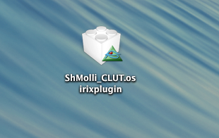
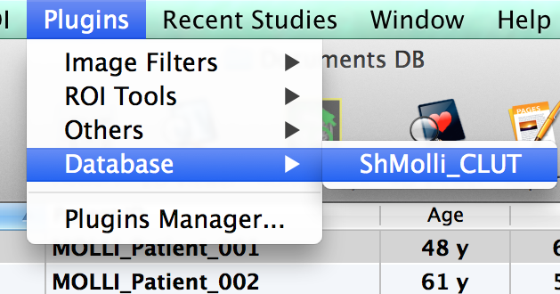
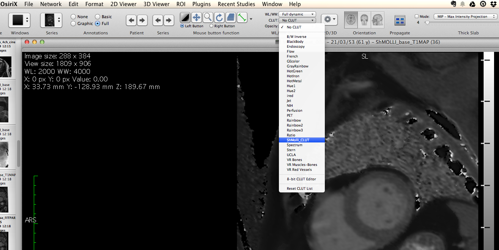

Osirixplugins Shmolli Color Look Up Table
by Konrad Werys
View the Project on GitHub MRKonrad/osirixplugins_ShMolli_CLUT
Osirixplugins Shmolli Color Look Up Table
Simple Osirix plugin to add Color Look Up Table similar to T1 map ShMolli color table used on Siemens scanners.
ShMolli article
How to use it?
- Download From here
- Install

- Run

- Select CLUT

- Enjoy

Comments
- Original map has 4096 color levels, Osirix uses only 256
- Feel free to contact me: konradwerys2 at gmail